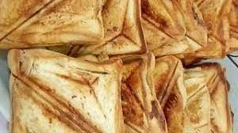

Toasted Bread

Description
Not like your regular toasted bread.
Ingredients
- Sliced bread
- Eggs
- Butter
- Sardine
- Pepper
- Seasoning; as much as you'll like
Steps
- Put your pan on the stove and pour your
sardine oil in it, then pour your onions and
allow it to fry for two minutes then tomatoes
and pepper then mix them together and pour
your seasonings,spices and salt and cover for 2 minutes
- Get a bowl and break your egg in the bowl plus
your sardine and beat it then pour it in your pan and
mix together then get your Parboiled boneless chicken,
grind it and pour it in your pan and mix together allow
it to cook for 1 minutes then off your stove and set aside
- Get your bread and butter both sides with butter.
- et your toaster and arrange your bread on it, then put
your fillings on it then cover with another slices of
bread and cover your toaster
- Serve.
THIS RECIPE WAS COPIED FROM COOKPAD